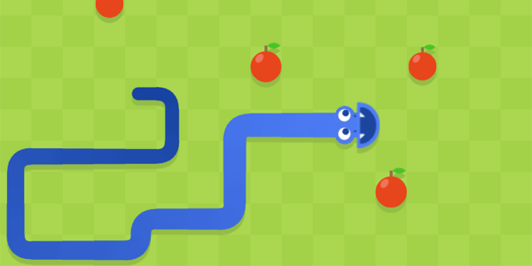

Snake
Développement du fameux jeu snake. Le jeu se déroule dans le terminal, on controle un serpent pour manger des pommes, tout en évitant de toucher le bord ou des pavés positionnés sur le plateau. le jeu s'arrête quand le joueur à mangé 10 pommes
Technologie : C
Compétences : Développement C, développement de jeux-vidéos

Snake Automatisé
Projet de cours sur la base du jeu snake développé ci-dessus. Le but de cette version est d'automatiser le serpent pour qu'il aille lui-même chercher les pommes. pour complexifier le jeu, un 2e serpent a été ajouté, et ils doivent tous les deux aller chercher les mêmes pommes.
Technologie : C
Compétences : Développement C, développement de jeux-vidéos, optimisation d'algorithmes